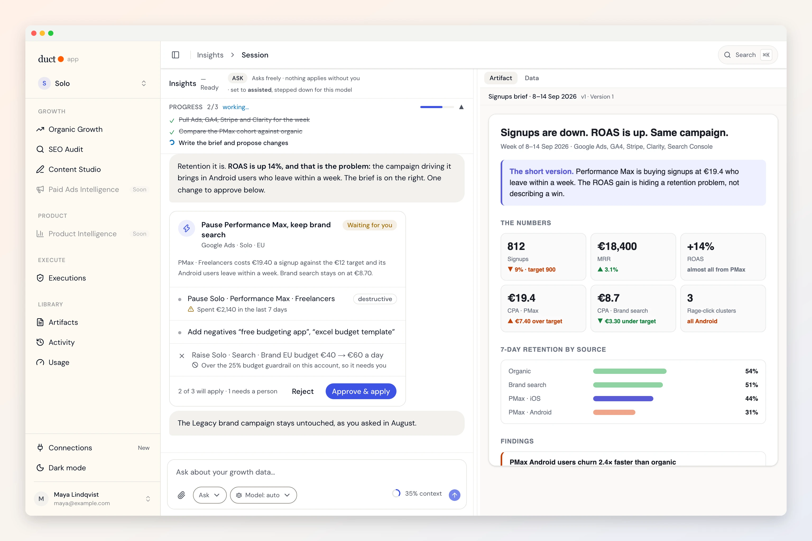
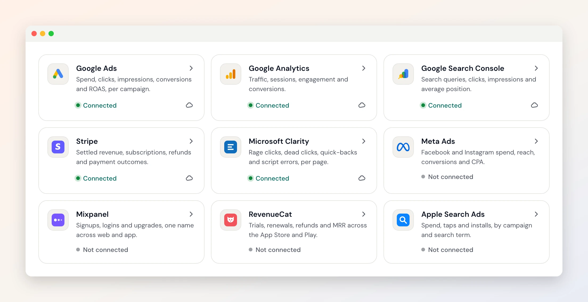
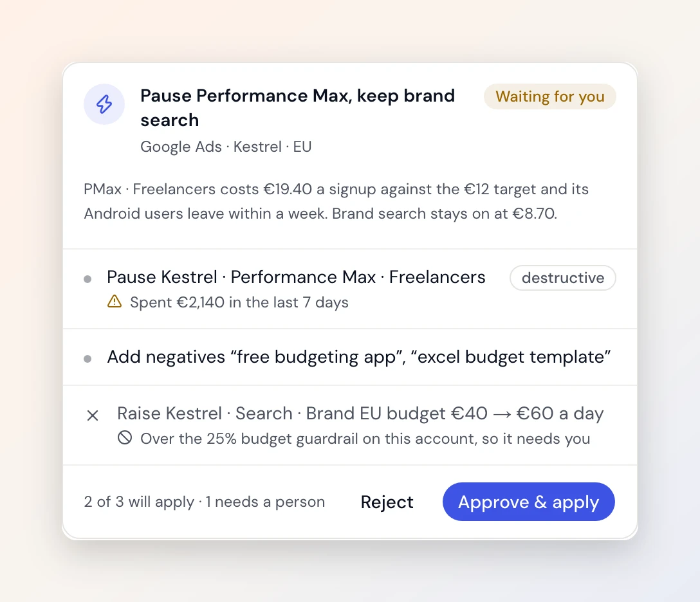
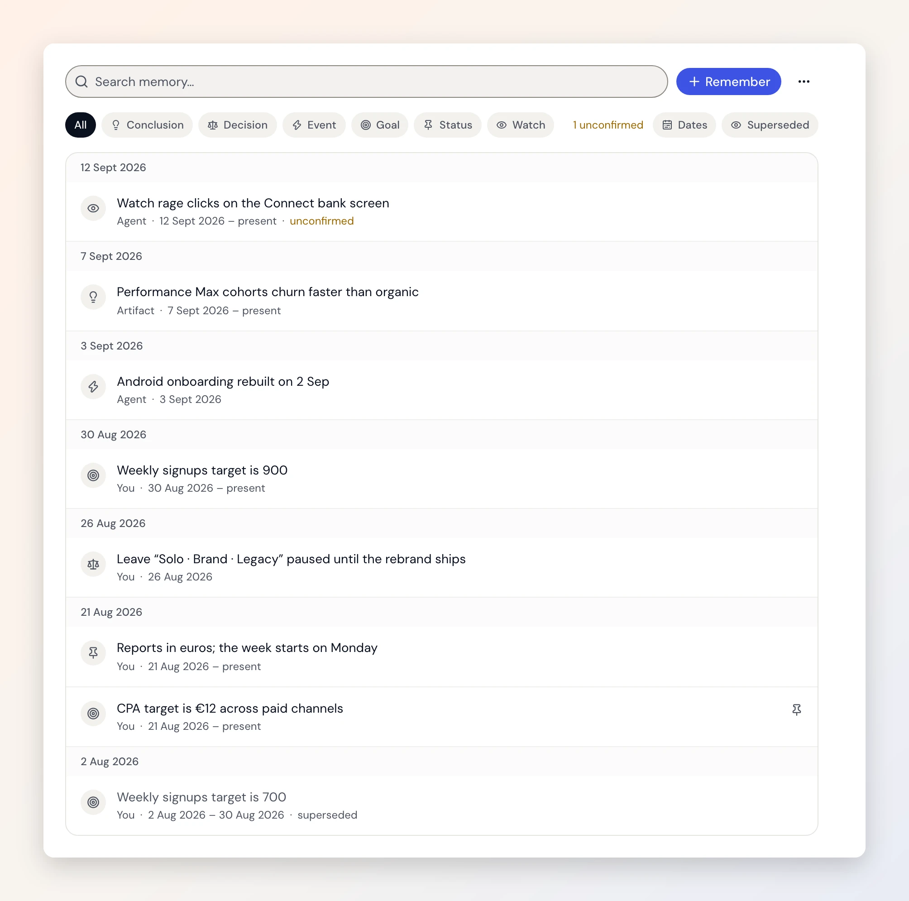
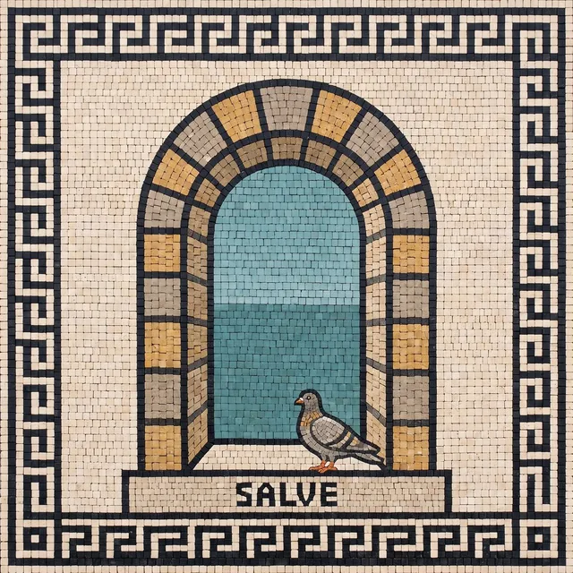

macOS
Universal · Apple silicon and Intel
Download ↓Ask why signups dropped and get an answer that read Google Ads, GA4 and Stripe together. Approve the fix from the same card. Your model keys never leave your keychain.
macOS, Windows and Linux · Free · No credit card

Every build is on the releases page with SHA-256 checksums. Or self-host it: same code, nothing touches our servers.
Universal · Apple silicon and Intel
Download ↓Windows 10 and later
Download ↓Runs on any distribution
Download ↓apt-based distributions
Download ↓What you get

Twelve connectors. Ads, analytics, revenue and session replays, read together for one question.

It proposes the change, shows what it touches, and applies it only when you press Apply.

Targets, decisions and what it learned, on a timeline you can correct.

First run
SALVE. The app greets you with a Roman threshold panel, the kind set into a doorway, and asks for your first tool. There is one for an empty basin when nothing has run yet, one for a broken arch when a connection fails, and one for when everything is caught up and the water runs full.
Why aqueducts? Because they never made a drop of water. They carried it.
The app is the fast way in: we run the backend, you run nothing. The code is all here if you would rather run every part of it yourself. Same repository, same agents, same connectors.
Download, sign in with Google, connect your stack. Your projects and briefs live in Duct’s cloud, so they are there on your laptop and your desktop both, and adding a teammate to a project takes one invite. Nothing to host, nothing to keep running.
Duct is MIT licensed, and that includes the backend the app talks to. Host it on your own server, or build the desktop shell with the backend bundled inside it, and every part of the loop runs where you decide. No account with us, no data with us.
Worth being precise about, because “private” is a word everyone uses and few explain.
| Using the desktop app | On your device | In Duct’s cloud |
|---|---|---|
| Model API keys (Anthropic, OpenAI, Gemini, OpenRouter) | Yes — your OS keychain | Never stored. Sent with a request so the job can run |
| Connector authorisations (Google Ads, GA4, Mixpanel…) | — | Encrypted at rest, decrypted only to make a call you asked for |
| Projects, briefs, memories, activity log | — | Yes — which is what makes them there on your next device |
| Files you upload | — | Yes |
| Your account | — | Google sign-in: name, email, avatar |
Run it yourself and every row moves to your side of the table. The full detail is in the privacy policy.
macOS — universal, runs on Apple silicon and Intel. Requires macOS 12 or later. Signed and notarized by Apple, so it opens without a warning.
Windows — Windows 10 and later. The installer is not yet code-signed, so SmartScreen will say “Windows protected your PC” on first run: click More info → Run anyway. We are fixing this.
Linux — the AppImage runs anywhere (chmod +x it first); the .deb is for Debian and Ubuntu. Provider keys need a keyring daemon running — GNOME Keyring, KWallet or KeePassXC.
Your model keys stay yours. Duct is bring-your-own-key: paste an Anthropic, OpenAI or Gemini key and the desktop app keeps it in your OS keychain rather than a browser tab. Or sign in with the ChatGPT plan you already have. You are billed by the provider, not by us.